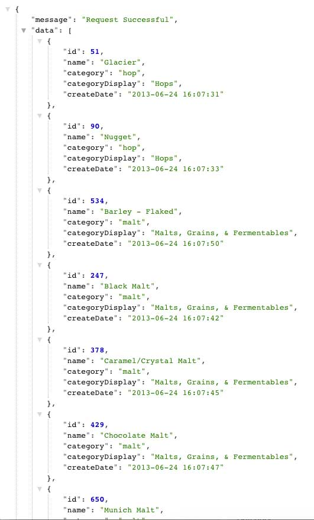

BreweryDB Getting Started Guide Using Node.js
This guide will discuss some examples and instructions on how to utilize the BreweryDB API
When deciding upon an API to research, I came across the BreweryDB API. For starters, I like beer. Living in Central Florida, the beer scene is really up and coming and people taking their beers seriously. When looking through the documentation, there really wasn't a solid 'getting started' guide. As someone who wanted to utilize this API as a novice developer, the documentation may be overwhelming.
Given the ever increasing popularity of javascript being utilized on the server side, I thought I'd discuss some of BreweryDB's methods and responses using node.js.
Sign Up for an Account
First, you will need to go here to sign up for a BreweryDB account. This will allow you to get an API key to leverage the API.
With out upgrading to premium, you can register up to two applications. Once this is done, an API key will be generated. I have blued out my actual API key.

.gitignore file.Setting up a Node.js Application Using Express
Express is a minimal and flexible Node.js web application framework that provides a robust set of features to develop web applications. We could write web applications without Express, but utilizing it takes away quite a bit of pain of having to write boilerplate code.
Create a new folder from the directory of your choice in terminal,
mkdir NodeBreweryDbApp. cd into that.
touch app.jsThis will create a file called app.js where all server-side javascript will reside.
npm init will create a package.json file which handles all our dependencies. Press enter on all the prompts as those details are not important at this point.
npm install express --save will add Express to our package.json file.
Open up app.js in the text editor of your choice and add the following:
var express = require('express');
var app = express();
app.set('port', 3000);
app.get('/', function(req, res){
res.send('hello world!');
});
app.listen(app.get('port'), function(){
console.log('Express started on http://localhost:' + app.get('port') + '; press Ctrl-C to terminate.');
});
Save app.js.If you now run node app.js from your command line, you'll see the above log message and can now navigate to localhost:3000 and see the hello world! message. We now have a functioning web application!
You'll see a link on the left side of the page titled 'Service Libraries'. Fortunately there is a node.js wrapper called brewerydb-node. It does exactly what we need it to do: get data. This will allow us to get up and running quickly. Open up your terminal of choice and install it with:
npm install brewerydb-node --save
Connecting to the API
After you obtain your API key, head over to the API Documentation page which can be found here.
Since we are using the brewerydb-node wrapper, we need to require the module in our code like so:
var BreweryDb = require('brewerydb-node');
Then we will create a new BreweryDb object like so:
var brewdb = new BreweryDb('your-key-here');
Replace your-key-here with your actual API key you obtained when signing up. Note that this object expects a string parameter.
Returning Data about a Brewery
After setting up your BreweryDB object, we are now ready to return some data using node.js
app.get('/breweries/:id', function(req,res){
brewdb.breweries.getById(req.params.id, {}, function(err, brewery) {
if(err) {
console.error(err);
} else {
res.send(brewery);
}
})
});
Let's break down what is going on above. We are using app.get() which essentially gets a URL and returns something.
brewdb.breweries.getById(req.params.id... is where the magic happens. getById is expecting an ID as a parameter, and if we don't pass it a valid brewery ID we will get an error.
SERVER_URL/breweries/ID_PARAM.
If you go to the BreweryDB website, you can get the ID of a brewery. Let's try out one of my favorite in the Central Florida area, Redlight Redlight Beer Parlour and Brewery. This brewery has an ID of tZN5nt. So our URL would be (and make sure to restart app.js!):
localhost:3000/breweries/tZN5nt
This returns a JSON response like so:
THINK ABOUT IT:
How could something like this be used a live web application?
Maybe a user is navigating your epic BEER-INFO-FOR-US website. They type in 'Orlando Florida breweries' in your form field and Red Light Red Light shows up when they press the submit button. They're intrigued by the name, but they don't know a thing about the brewery iteself.
In our above JSON response, description was one of the property names. If you wanted your website (ie, maybe when the user is on your Redlight Redlight view and there's a link to Description), you could query just the description like so:
res.send(brewery.description); instead of just res.send(brewery); which would return the full response. See how easy that is?
Returning Data about a Beer
We've now gone through how to query information about a brewery. Now let's return data about an actual beer!
Similar to breweries, obtaining information on a beer is quite similar:
app.get('/beer/:id', function(req,res){
brewdb.beer.getById(req.params.id, {}, function(err, beer){
if (err){
console.log(err);
} else {
res.send(beer);
}
});
});
The API call for beer is very similar to breweries. Instead of passing the brewdb object a breweries attribute, we will pass
it a beer one.
Navigate to: http://localhost:3000/beer/KLOHSg
This returns a JSON response like so:
You will notice this JSON response is a bit more complex than the breweries example above. This object has something called nested attributes.
Intimidated? Don't be! Just like our brewery.description example above, we will 'dig' deeper into the attributes, to obtain the category name of the style of beer, like so:
res.send(beer.style.category.name) and this will return Irish Origin Ales.
Returning a Beer's Ingredients
We will need to add another module to our application, the request module, which can be found here.
Let's add it our .js file up top by doing:
var request = require('request');
Instead of utilizing a brewdb object this time around, we will pass it to the request object.
app.get('/beer/:id/ingredients', function(req, res){
request("https://api.brewerydb.com/v2/beer/" + req.params.id + "/ingredients?key=eb9da7a21efe1cb3a63fa06719ce7e6b", function(error, response, body) {
if (!error && response.statusCode === 200) {
res.send(JSON.parse(body));
}
});
});
/beer/:id/ingredients. This is styled based on the Ingredient Endpoint documentation, see here.
Running http://localhost:3000/beer/WHQisc/ingredients in the browser will return a lengthy JSON response:

Note that JSON.parse() was not necessary to use in this case, but makes it easier to analyze the ingredient information. See documentation here.